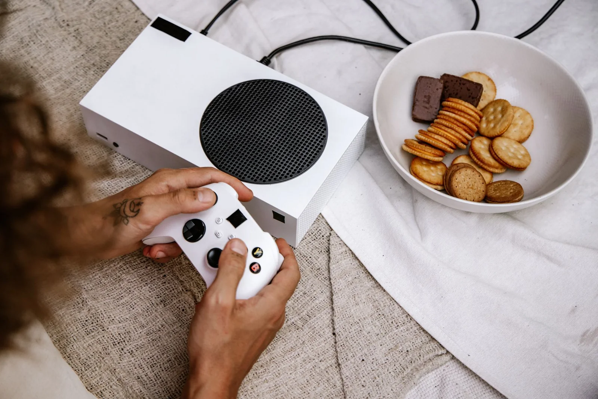

Aventuras de gran escala
Forza Horizon ofrece carreras en un mundo abierto y una progresión accesible para explorar a tu ritmo. Starfield propone una aventura espacial con creación de personaje y misiones; revisa sus actualizaciones y requisitos para tu versión. Psychonauts 2 combina plataformas, humor y escenarios que cambian de estilo. Son recomendaciones para quien disfruta campañas largas, aunque el ritmo y la estructura de cada una son muy distintos.
Acción, rol y estrategia
Halo: The Master Chief Collection reúne varias campañas y modos de una franquicia de ciencia ficción; consulta qué títulos incluye la edición disponible. Gears 5 ofrece combate en tercera persona y cooperativo. Age of Empires IV es una opción de estrategia con campañas y partidas frente a otras personas. La compatibilidad exacta depende de consola, versión y juego cruzado; revisa los detalles antes de invitar a un grupo que usa PC.

Juegos para jugar con otras personas
Sea of Thieves convierte la navegación y el trabajo de tripulación en la fuente principal de historias; Minecraft permite construir o sobrevivir en mundos compartidos. Grounded organiza una aventura cooperativa en un jardín sobredimensionado. Si buscas partidas más cortas, prueba Rocket League o un juego de lucha compatible con multijugador local. Confirma suscripciones, juego cruzado y límites de jugadores en la ficha oficial.
Criterios de la selección
Valoramos variedad de géneros, identidad y facilidad para elegir una experiencia según tus preferencias. No ordenamos por ventas ni atribuimos una nota a la comunidad. Distinguimos campañas para un jugador de servicios en línea que requieren conexión. La palabra «mejor» es una recomendación editorial: una persona que solo juega carreras quizá prefiera Forza; otra que busca historia puede elegir una aventura narrativa.
Cómo aprovechar la biblioteca Xbox
Antes de comprar, revisa si el juego está incluido en un servicio activo y si la licencia puede salir del catálogo. Comprueba espacio de almacenamiento, edición y modo gráfico disponibles. La compatibilidad con versiones anteriores no implica que cada función se conserve. Si juegas en PC y consola, busca sincronización de progreso y juego en la nube en la ficha del título, no solo en la descripción general del servicio.
En resumen
Forza Horizon, Halo, Gears, Minecraft, Sea of Thieves y Age of Empires ofrecen caminos diferentes en Xbox. Comprueba edición, servicio, juego cruzado y plataforma antes de organizar una compra o sesión.
Preguntas frecuentes
¿Qué juego de Xbox es bueno para empezar?
Forza Horizon es accesible para conducir; Minecraft y Halo ofrecen otras experiencias conocidas.
¿Xbox comparte juegos con PC?
Algunos títulos admiten juego cruzado o progreso compartido, pero debe confirmarse juego por juego.
¿El catálogo de suscripción es permanente?
No necesariamente; revisa el catálogo vigente y las condiciones del servicio en tu región.
Fuentes y lecturas
Consulta la fuente original cuando exista y su fecha; los anuncios, el catálogo y las guías de terceros pueden cambiar.